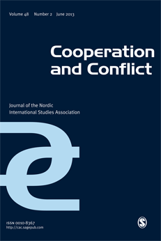

收录于合集

作品简介
【作者】 Emilian Kavalski，现宁波诺丁汉大学中国—欧亚关系和国际关系研究李达三（Li Dak Sum）讲座教授。此前曾任教于澳大利亚天主教大学（Australian Catholic University）和西悉尼大学（Western Sydney University）。主要研究方向包括国际关系理论、安全研究、新地区主义、上海合作组织、一带一路倡议、欧盟和中国外交政策等。作者资料见：https://www.nottingham.edu.cn/en/internationalstudies/know- our-people/emilian-kavalski.aspx
【编译】 陈勇（国政学人编译员，北京大学国际关系学院）
【校对】 许文婷
【审核】 扎西旺姆
【排版】 梁鑫昱
【来源】 Kavalski, E. (2013). The struggle for recognition of normative powers: Normative power Europe and normative power China in context. Cooperation and Conflict, 48 (2), 247-267.

期刊简介

《合作与冲突》（ Cooperation and Conflict ）是发行超过50年的同行评议期刊，内容传统上集中于北欧和欧洲事务。该刊信奉学术多元主义，因此不代表任何一种特定的研究方法、研究路径、学术传统和学术流派。根据2018 Journal Citation Reports显示，其影响因子为1.877，位列“国际关系”类别期刊第21位。
规范性力量争取认同的努力：作为规范性力量的欧洲和中国
The struggle for recognition of normative powers：Normative power Europe and normative power China in context
Emilian Kavalski
内容摘要
什么是规范性权力？哪些国家是规范性力量？文章提出，规范性权力国家是得到他者认同的行为体。作者对曼纳斯的观点提出修正意见，认为具有规范性权力的国家不是具有塑造国际生活中“常态（normal）”的能力的行为体。“常态”不仅是由规范性权力国家决定的，而是在这些国家与其他国家基于一定处境的互动中产生的。从这个意义上说，成为一个具有规范性权力的国家需要他者的认同。为阐释这一观点，本文同时评估了欧洲和中国的规范性权力，并试图通过两者的比较进一步探讨规范性权力的关键要素。
文章导读
注：本文中Power 指代具有规范性权力的行为体时，翻译成“力量”，例如 中国是规范性力量；如果Power指代“规范性权力”本身，则翻译为“权力”，例如 中国的规范性权力、欧盟具有规范性权力。
01
规范性力量的崛起？
规范性权力的论述集中于欧洲国际关系理论，但用于对其他国际行为体，尤其是中国、印度等表现越来越突出的亚洲国家的分析却极为少见。在解释这些行为体日益增强的影响力时，“软实力”的概念仍然是主要框架。一方面，由于欧盟的复杂性，亚洲学者在研究过程中很少结合欧洲国际关系理论中的概念和假定；另一方面，欧洲国际关系学者也很少将其术语运用于对非欧洲行为体的研究。本文则试图改善这一局面。
第一部分主要分析规范性权力的概念。首先，虽然国际行为体，无论主权国家、国际组织还是非国家行为体，都受到特定规则、标准或行为准则的约束，但这并不意味着所有行为体都是规范性力量。相反地，按照曼纳斯（Ian Manners）和杰克逊（Jay Jackson）的观点，规范性力量国家指的是具有框定“可接受”或“不可接受”行为的能力或合法性的行为体。规范性力量国家的崛起则意味着行为体，如欧洲或中国试图为国际互动模式提供一种独特的范例。因此，对何为“常态”的表述既催生了特定的议程，也包含着权力关系。区分规范性权力与其他类型权力的要素便存在于其管理不对称关系的方式中：从工具性的层面看，规范性权力既不是军事或纯粹的经济力量，而是一种通过思想和观念发挥作用的权力（Diez, 2005: 615），是另一种形式的授权（Tocci, 2008: 9–13）。
此后，作者借用杰克逊的观点，指出“兼容（tolerance）”是规范性权力的一个关键方面。兼容并蓄的规范性力量的特点是具有“终止评价他者行为的意愿”，由此促成了一系列特定的“他者对规范性行为体行动的期望（‘expectations by others for [a normative] actor’s conduct’）” (Jackson, 1975: 240–244).。争取认同对规范性力量来说至关重要，因为行使规范性权力需要得到伙伴国家某种程度上（自愿）的默许。所以，与大国之间的关系不同，规范性力量之间的联系从本质上来说是对话性的（dialogical）。规范性力量不会介入约束他者行为的事务，而是与其他行为体分享实践（shared practices）。
据此脉络，规范性权力是一种“应具体处境而生的权力（emerge as a power in context）” ——它不完全是行为体的固有要素，而取决于特定情境中的互动类型。换句话说，规范性权力的出现与施动者所在的互为主体间性（inter- subjective）的环境有关。“规范性力量”的崛起可以被简单理解为“寻求认同的努力”。
02
欧洲的规范性权力：依然是具有矛盾性的术语？
许多评论者认为，欧盟的外部事务政策是一种标榜自由民主的，政治经济相互依赖的复合框架，其主要目标包括在世界范围内推动建立透明的治理模式、切实可行的市场机制和强大的公民社会，这正是欧盟被称为规范性力量的原因。由于主要关注点在于扩大化（enlargement），欧盟的规范性权力与其（推动）转型的潜在能力相伴而生，支撑着欧盟对希望入盟的国家的制约力。因此，欧盟的规范性权力反映了其假定的特权地位——换句话说，非欧盟的欧洲国家必须学习去适应（这些规范），而不是欧盟自身（Webber, 2007: 161）。然而，对候选国“欧洲化（Europeanization）”的过度关注似乎削弱了欧盟的规范性权力在非欧洲地区的运作效率。欧洲化机制是为潜在候选成员国和欧盟的邻国量身定制，但在变化多样的非欧洲环境中却遭遇了水土不服。因此，虽然欧盟在外部事务中致力于将自己的规范推广到世界其他国家，但却缺少明确有效的社会化手段。正因如此，欧盟在探索新的外部事务政策时必须严肃反思现有的规范性策略框架。
03
框定中国的规范性权力
中国（影响力）正不断向外扩展，也正在扮演着日益多样化的角色，这促使对世界政治的思考出现了新的脉络。冷战结束之后，评论者思考的是在以“历史终结”为特征的地缘政治环境下，西方的观念能够传播多远。现在，争论的焦点则是中国的思维能够传播多远。以此为起点，需要关注的是中国外交政策中的规范和价值观因素。事实上，“回归传统（return to tradition）” 可能是中国的规范性权力的显著特征，也主导了整个中国外交政策的思考。当代中国对国际关系的思考一方面来自于学习大国兴衰、霸权更替的历史经验，另一方面则具有内省性（introspective），关注中国过去的辉煌和历史遗产。在此情境下，中国反省、重拾一种基于互动实践的规范性权力，而非具有明确适当性规范（norms of appropriateness）的形式。
强调对话对于中国的规范性权力的发展具有重要意义。例如，一个逐渐为人所理解的事实是中国并不以其独特经验向他者施加压力，而是让自己拥有吸引他者的力量。换句话说，领导者的地位是在需要在互动过程中争取而来，而不是通过主导优势（domination）强加于人。吴本立（Brantly Womack）认为，“互相尊重（respect for the other）”是中国规范性权力的“基本美德（cardinal virtue）”。借助儒家思想中“和而不同（harmony with difference）”的观点，张锋（Feng Zhang）认为当代中国外交政策中的尊重体现在“和谐包容（harmonious inclusion）”的实践中。如他所述，儒家思想强调与他者和谐共处，但并不一定要产生认同（Zhang, 2011: 8）。由此产生的中国的规范性权力以“成就自己的同时也让别人实现目标”为基本原则。换句话说，传统中国伦理认为，有意义的密切联系产生于以尊重（而非认同）他者为前提进行的互动，而不是来自规则和规范的强行施加。
就此而言，规范性权力必然是与具体处境相关的——中国传统（特别儒家思想）认为“常态”的定义是条件性的，取决于互动的对象和时机（Rosemont, 2006: 14）。如吴本立所言，欧盟的规范性权力由适当性逻辑（logic of appropriateness）所框定，中国的则是遵循“关系性逻辑（logic of relationships）”。这种逻辑认为常态化的关系不需要伙伴间的实力对称或平等交换，但一定要具有互惠性（例如互相尊重）（Womack, 2008: 295–297）。若透过关系性逻辑来理解规范性权力，则为了常态（normal）而制定的规范不再由领导国家的权利和义务所定义，而是多数参与国在互动过程中形成的“行为标准”（Yan, 2011: 238.）。因此需要强调的是，中国的规范性权力是让其他国家一同参与实践行动——“行中国之所行（they do as China does）”。这种模式有别于西方行为体（尤其是欧盟）的安全治理实践，后者以“行吾所言，非吾所行（‘do as I say, not as I do’）”为限制条件（Kavalski, 2009: 1–18）。
杰克·巴巴莱特（Jack Barbalet，2011）认为中国的规范性行动是“为他者提供有效的范例”，并通过“无为”的概念理解中国的规范性权力。“无为”既不是任意而为，亦非偶发行动，而是一种不干涉行动（non- interfering action），是一种适应社会进程的，旨在理解潜在事件或他者的不任性妄为的行动（non-willful action），以及一种激发他者为自身主张而有所为的行动（Barbalet, 2011: 342–347）。在此背景下，对他者表示尊重的目的是在与其他行为体发展“积极关系”的进程中展示中国的“自律和自我约束（self-discipline and self-restraint）”（Qin, 2011: 138.）。中国给予对话者的尊重也有利于一些“尴尬国家（awkward states）”对抗西方的发展、现代化和全球经济文化一体化等主导性话语，突出自己的存在。这种隐藏在关系性逻辑背后的个体性显示了互动在本体论层面的深层意义：根据自己的观念，而不是国际社会强加的总体期待来找到对自己而言重要的事物，这将扩大自我实现的范围 (Nel, 2010: 970–971)。
这些模式反映出中国的规范性权力中包含的社会化能力。全球性“魅力攻势”的开展证实了中国正尝试将自己构建为国际社会中一个负责任的可靠角色，能够在西方行为体和国际组织倡导的模式之外提出一个可行的替代方案。尽管一些观察家认为中国一直是（或拥有）规范性权力，本文认为中国的规范性权力来自于外部关系中的一些关键的互动实践：1）和平崛起与国际地位（变化）；2）不干涉内政；3）保护中国的价值观。
04
“和平崛起”与国际地位
在和平崛起的语境中，中国掌控国内经济和社会转型的能力以及不断增长的地区和全球影响力找到了历史定位（Zheng, 2005）。如姜闻然所言，“和平崛起”的话语试图说明中国崛起成为强权的过程将有别于历史上其他的大国：崛起的强国将不会与现状大国发生大规模战争（Jiang, 2006: 340.）。中国梳理和平崛起的脉络意在将自己的对外政策姿态与西方带有殖民倾向的国际实践进行对比，进而树立一种“道德权威（moral authority）”（Zhang, 2011: 12–16）。因此，和平崛起的叙述提出了对世界秩序和和平概念的另一种解读，与西方的安全共同体理念（例如欧盟的实践）有所区别。通过基于儒家思想的“以身作则（model behavior）”的实践，中国在“和平崛起”中表达了“和谐世界”的理念，发展出一种对规范性权力的理解方式（Paltiel, 2011: 394）。
05
不干涉各国内政
作为一项社会化策略，不干涉声明显示出中国对其影响国家间关系的能力的信心在不断增强。沈大伟（David Shambaugh）将这项策略描述为“主动参与、展现自制、提出保证、开放市场、增进互赖、共创利益和消减冲突”。坚持不干涉内政原则也是为强调“战略主权”的观点提供保证（Zhou, 2004）。历史上，这种姿态的出现反映了中国的决策者不惜以危害国家安全的方式保卫中国的独立与自主（Johnston, 1998: 66）。张勇进通过情景约束（contextual restraints）来解释这种坚持，并称应对人类的攻击性进行约束(Zhang, 2001: 48–50)。所以，在政策实践层面，“不干涉”的言论立场旨在强化中国的地位，使之成为值得信任和仿效的国际行为体。
因此，强调主权不可侵犯显示出中国对国际干预实践的反对态度。在中国外交政策的主要观念中，主权受损会阻碍“受害国（victim）”的发展，并且破坏其周边国家的稳定，最终让“入侵者（perpetrator）”达成目标（Shih, 1990: 41）。所以，坚持不干涉原则的目的是将注意力集中在规范性权力包容和善意的一面。就此而言，中国发挥规范性作用的合法性建立在关系本身，而不是某种框定互动关系的显性或隐形条件之上。
06
克服过去的阴影
规范性力量的投射将组成（并且构成）特定的认同政治。在国际事务中，产生影响的不仅是施动者本身，还有在国际互动的过程中被施动者推动形成的（初生的）国际认同体（international identities），例如其态度、属性和价值观念。依此，外交政策也是一个身份认同的议题。对外关系的模式会同时反映、重申和重组行为体的自我形象。中国也不例外。在和平崛起的过程中，中国在主权的重要性方面展现了强硬的既定立场，这与规范性权力的认同政治不无关系。尤其是当中国的合法地位被否认时，对"洗刷过去的耻辱 “的思考便暗示了这层联系。就此而言，以“过去作为他者而遭遇的国耻”为基点进行的反思性建构（reflexive construction）是中国规范性权力得以产生的前提条件。中国在区域和全球事务中初步展现的规范性权力是其“已经完成追寻清晰的民族认同的艰辛路程”的显著指标之一（Shambaugh, 2005: 59）。
07
规范性权力和争取承认的努力
对欧洲和中国的规范性权力的评估揭示了世界政治的一个关键特征——国际行为体在本体论层面所需的基础条件是关系性（relational）的——例如行为体存在的内涵是在主体间互动的过程中逐渐形成的（Murray, 2008: 252）。规范性权力必须具有合法性，换句话说，它们能否发挥作用取决于目标行为体是否确认其存在。因此，“欧盟模式”或“中国模式”的可行性不完全取决于双方的决定，还与他者如何看待两种模式的效用有关。在此背景下，承认（recognition）指代一种沟通进程，国家经此相互认可和尊敬对方在国际社会中的地位（Nel, 2010: 963）。承认可以表现在目标国家的特定态度、倾向和具体行为中。当行使规范性权力的国家为其预期目标提供了可信承诺时，目标国愿意予以承认。
就此而言，国际无政府状态（和观念）是由行为体的“地位不安全感（status insecurity）”驱动的（Webber, 2007: 4–5）。不安全感的产生是因为国际社会中主体间建构的身份认同具有不确定性。由于争取承认的过程中存在固有的不安全感，国际行为体试图将身份锚定在明确的物质实践上，以此掌控意义创造的过程（the process of meaning-creation）（Murray, 2008: 249）。欧盟共同市场的实践和中国政府主导的发展模式都体现了这一点。
对他人的认可是获得他人承认的基础，规范性权力也指代行为体考虑其行动对他者影响的能力（Womack, 2008: 266）。对他国表示尊重很可能带来互惠的期望。然而，承认可能是临时并可撤销的。这表明国际行为体具有“本构的脆弱性（constitutive vulnerability）”，尤其是对于规范性力量来说，他者的回应和反馈是难以预测的（Markell, 2003: 36）。
总之，尊重他者的能力使规范性力量得到承认，为其定义国际社会中“常态”的标准创造了适宜的环境。因此，行为体的国际认同不仅代表了能力，更多地也是获得承认的表现，后者既是规范性权力的结果，也在强化这种权力。
08
替代性结论：全球事务中的规范性权力
拥有规范性权力的国际行为体需要得到他者承认，才能获得定义国际社会中“常态”的能力。无论是“接受（acceptance）”还是“同意（consent）”都是特定的实践，都表明一定处境中的承认。理解规范性权力需要关注三个要素：原则（principle）、行动（action）和影响（impact）。首先，支撑规范性权力的原则都应被视为具有合法性的。第二，基于规范性权力采取的行动应该是具有说服力的。第三，如果规范性权力具有吸引力，则其影响必然产生于社会化过程。将规范性权力产生和发挥作用的过程串联起来的三个要素分别是互动（interaction）、刻意关系（deliberate relations）和共同体实践（communities of practice）。“互动”意味着规范性力量能够通过对话关系（dialogical relationships）对目标国家的行为施加影响。因此，规范性权力不仅是一种“规则治理（rule-based governance）”，更主要是“关系治理（relational governance）”（Qin, 2011）。“刻意关系”表明规范性权力产生于刻意为之的互动实践中，即试图提升互动关系的带有目的性的反复努力。规范性力量有意借此构建出利于学习的情境，以便它们对目标国家进行社会化（Ericsson et al., 1993: 368）。“共同体实践”说明规范性作用产生于共同体之中。规范性权力的关系导向意味着承认是一个团体进程。“常态”是共同体内部对话式的“规范构建（norm- building）”实践的结果。在这一语境下，规范性权力不是将某种秩序强加于他者，而是让其他行为体共同参与到实践中。
通过分析上述三个要素，作者认为，中国模式意味着，国家之所以被称为规范性权力行为体，是因为它按照规范性权力的应有之义运用了这种权力。因此，全球社会中“常态”与有意而为的互动相关，传递出行为体对他者行为的终极评价和参与共同实践的意愿。
译后记
本文旨在深入探讨“规范性权力”的含义。文章首先介绍了欧盟和中国两种不同的规范性权力。借助对“中国模式”的分析，作者就规范性力量国家“为何能够定义‘常态’”（即规范性权力的合法性来源）以及“如何确定‘常态’”（即作用方式）等问题提出了自己的理解。
欧盟“规范性权力”的合法性来源于特定的规范和价值观资源本身，涉及和平、自由、民主和法治、尊重人权和基本自由，社会团结、禁止歧视、可持续发展和善治等方面。1曼纳斯（Ian Manners）认为，这些规范是欧盟自身建设和对外行动的基础，并且欧盟有能力、有义务将这些观念推广到国际体系中。2欧盟的官方表述和实践中也体现出“规范性权力”的色彩，将价值观和规范视作欧盟内部团结和对外行动的基石。3在作用方式上，欧盟主要通过树立模范、设置标准等方式劝导其他行为体进行学习和模仿，由此发挥影响力，塑造目标国的行为。
在描述中国的规范性权力时，作者借鉴了“关系理论”的内容，认为“规范性权力”是在互动过程中不断被诠释和建构的。4合法性来自他者的认同，其根源不仅是价值观和规范资源本身，而是在互动过程中逐渐获得的。因此，在“中国模式”的语境中，规范性权力的作用主要通过对话和协商实现，学习和模仿居于次要地位。在此过程中，规范性力量和目标国的关系体现了相互尊重和包容多元的理念。
无论是欧洲模式还是中国模式似乎都表明规范性权力在世界事务中发挥着重要的作用。但一些实证研究也对规范性权力的效果提出了质疑。正如文章所提到的，目标国对规范性权力的反应具有不确定性，影响了实际作用。例如，在一篇研究中国的规范性权力与南海问题的文章中，作者认为东盟对多边主义规范和自身中心性的坚持导致中国推广规范的努力效果有限。5此外，曾向红也指出中亚国家的多元平衡外交是欧盟的规范性权力在中亚地区遭遇困境的原因之一。6不仅如此，行为体内部因素，例如欧盟不同成员国的经济利益也可能影响共同体层面的规范性权力的运用。7例如，朱塞佩·鲍杜奇（Giuseppe Balducci）的文章分析了欧盟对华外交中的规范性权力作用，指出成员国各自的利益考量影响了欧盟在促进人权和法治方面统一行动的能力。 8近年来，难民问题、英国脱欧等事件也给欧盟带来了内部凝聚力危机，削弱了欧盟的“榜样”效应，对“规范性权力”的作用也造成了消极影响。
总而言之，文章对中国的规范性权力的讨论或许说明“规范性权力路径（NPA，normative power approach）”9不仅能用于理解和评价欧盟的对外政策，也可以为解读更广泛的国际关系实践提供新的角度，对这一概念的理论和实证研究都有很大发展的空间。
【参考文献】
1. 张茗.“规范性力量欧洲”:理论、现实或“欧托邦”?[J].欧洲研究,2008,26(05):1-16
2. Manners I. Normative power Europe: a contradiction in terms?[J]. JCMS: Journal of common market studies, 2002, 40(2): 235-258.
3. European Union. Shared Vision, Common Action: A Stronger Europe, A Global Strategy for the European Union’s Foreign And SecurityPolicy, https://eeas.europa.eu/archives/docs/top_stories/pdf/eugs_review_web.pdf.
4. 作者在2017年还出了一本书，名为《国际关系理论的“关系”》（The Guanxi of Relational International Theory）。在书中提出应由东西方学者分别并共同提出关系理论。参考：秦亚青：文化与世界政治的关系理论. 爱思想网，2018-07-12，http://m.aisixiang.com/data/110934.html.
5. Han D G X. China’s normative power in managing South China Sea disputes[J]. The Chinese Journal of International Politics, 2017, 10(3): 269-297.
6. 曾向红.“规范性力量”遭遇“新大博弈”:欧盟在中亚推进民主的三重困境[J].欧洲研究,2020,38(02):34-60
7. Hyde-Price A. ‘Normative’power Europe: a realist critique[J]. Journal of European public policy, 2006, 13(2): 217-234.
8. Balducci G. The limits of normative power Europe in Asia: the case of human rights in China[J]. East Asia, 2010, 27(1): 35-55.
9. Manners I. Assessing the decennial, reassessing the global: Understanding European Union normative power in global politics[J]. Cooperation and Conflict, 2013, 48(2): 304-329.
本文由国政学人独家编译推荐，文章观点不代表本平台观点，转载请联系授权。

添加 “国小政”微信，获取最新资讯


好好学习，天天“在看”
国政学人
支持学术公益与知识传播
微信扫一扫赞赏作者 __赞赏
已喜欢，对作者说句悄悄话
取消 __
发送给作者
发送
最多40字，当前共字
上一页 1/3 下一页
长按二维码向我转账
支持学术公益与知识传播
受苹果公司新规定影响，微信 iOS 版的赞赏功能被关闭，可通过二维码转账支持公众号。